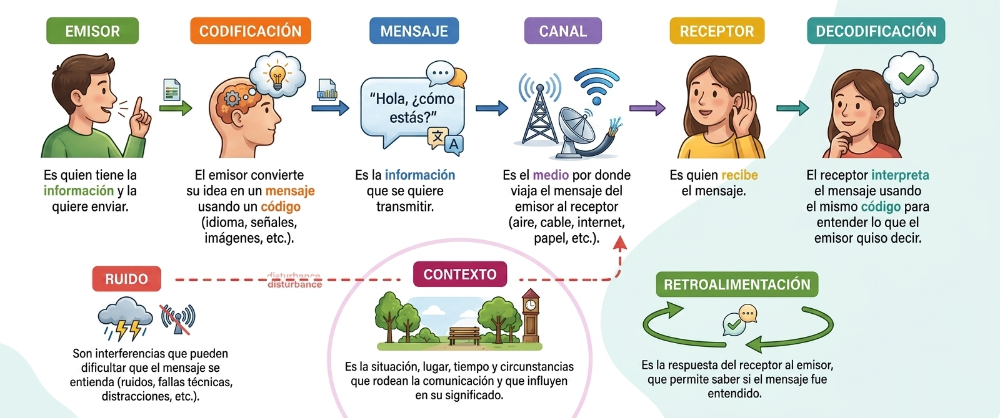
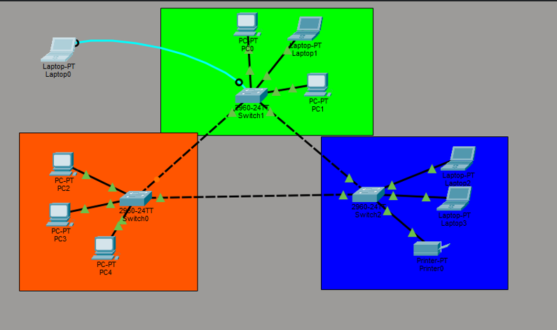
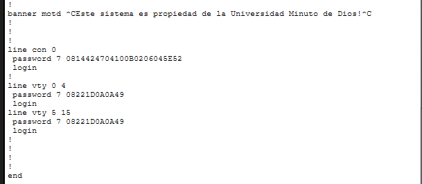
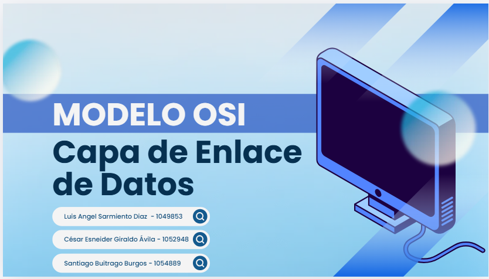

Fundamentos del proceso de comunicación (emisor, canal, receptor, ruido y retroalimentación), las reglas que rigen un protocolo de red, las organizaciones que estandarizan Internet y los modos de acceso y configuración de la CLI de Cisco (IOS).
Flujo emisor → codificación → mensaje → canal → receptor → decodificación. El ruido y el contexto pueden alterar el mensaje; la retroalimentación confirma que se entendió correctamente.
Acuerdos sobre método, idioma y confirmación de un mensaje. Cumplen funciones de direccionamiento, confiabilidad, control de flujo, secuenciación y detección de errores en cada capa.
Métodos de acceso por consola, SSH o Telnet, y jerarquía de modos: EXEC de usuario, EXEC privilegiado, configuración global, de línea y de interfaz.

Diagrama del proceso de comunicación trabajado en la Sesión 3.
Switch> enable Switch# Switch#configure terminal Switch(config)#line console 0 Switch(config-line)#exit Switch(config)#
Switch(config)#hostname SW1-ACCESS SW1-ACCESS(config)#enable secret ****** SW1-ACCESS(config)#service password-encryption SW1-ACCESS(config)#banner motd #Acceso restringido# SW1-ACCESS(config)#end SW1-ACCESS#write memory
Convierte la información en bits, señales de luz, sonido o impulsos eléctricos aptos para el medio.
Estructura del mensaje según el tipo y el canal utilizado para entregarlo.
Los mensajes se dividen en tramas del tamaño adecuado para el medio de transmisión.
Unicast (uno a uno), multicast (uno a varios) o broadcast (uno a todos).
| Clasificación | Modo | Descripción |
|---|---|---|
| Dirección del flujo | Simplex | La información circula en un solo sentido, del emisor al receptor. |
| Half-duplex | Circula en ambos sentidos, pero no al mismo tiempo. | |
| Full-duplex | Circula en ambos sentidos de forma simultánea. | |
| Sincronización | Asíncrona | El dispositivo envía datos cuando los necesita, sin sincronización temporal fija. |
| Síncrona | Los dispositivos intercambian datos siguiendo una coordinación temporal común. |
Estándares de electrónica e ingeniería eléctrica (cableado, conectores, racks).
Desarrolla y mantiene los estándares y protocolos técnicos de Internet.
Administran nombres de dominio y asignación de números de Internet.
Promueven la evolución abierta de Internet y dirigen su arquitectura general.
| Capa OSI | Capa TCP/IP | PDU |
|---|---|---|
| Aplicación / Presentación / Sesión | Aplicación | Datos |
| Transporte | Transporte | Segmento |
| Red | Internet | Paquete |
| Enlace de datos | Acceso a la red | Trama |
| Física | Bits |


